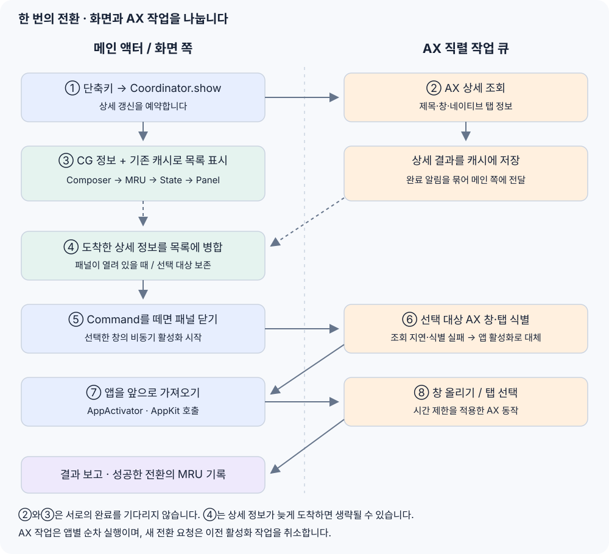
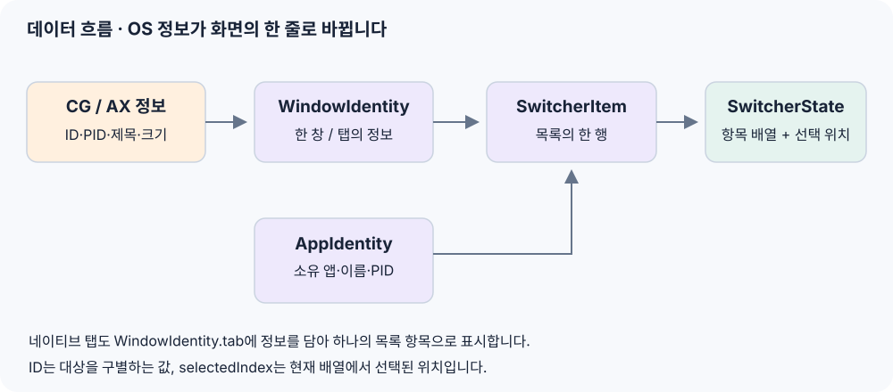

기준: 0be9d36 커밋의 구현. 이 문서는 코드를 처음 읽는 사람을 위한 안내서다. 세부 설계는 아키텍처 문서, 실행 방법은 README를 참고한다.
처음에는 SwitcherCoordinator를 중심에 놓고 읽으면 된다. 이 파일이 단축키, 목록, 화면, 창 활성화를 연결한다. 나머지 파일은 이 흐름의 일부를 맡는다.
1. 전체 구조: 진행·규칙·화면·macOS 연동
이 그림의 화살표는 “오른쪽 기능을 사용한다”는 뜻이다. 프로그램이 실행되는 순서를 뜻하지 않는다. 실제 모듈 의존성은 Package.swift에 있다.
| 폴더 | 쉬운 설명 | 주로 답하는 질문 |
|---|---|---|
Sources/BokslTabApp | 전체 진행을 연결하는 곳 | 언제 목록을 열고, 어떤 대상을 전환할까? |
Sources/BokslTabCore | 데이터와 동작 규칙 | 한 행은 무엇인가? 선택과 정렬은 어떻게 바뀔까? |
Sources/BokslTabUI | 화면을 그리고 입력을 받는 곳 | 목록을 어떻게 보여주고 어떤 키를 처리할까? |
Sources/BokslTabMacOSAdapters | macOS와 대화하는 곳 | 어떤 창이 있고, 그 창을 어떻게 앞으로 가져올까? |
Tests | 변경 후 동작을 확인하는 곳 | 선택이 틀어지거나 느린 앱 때문에 멈추지 않을까? |
docs | 제품·구조·검증 설명 | 전체 의도와 확인 방법은 무엇인가? |
scripts | 개발용 앱을 만드는 도구 | 실행 가능한 .app을 어떻게 만들까? |
예를 들어 “선택을 다음 행으로 옮기는 규칙”은 Core, “선택한 행의 배경색”은 UI, “다른 앱의 창을 올리는 요청”은 MacOSAdapters, “Command를 떼면 전환하라”는 연결은 App에 있다.
2. 앱이 시작될 때
출발점은 BokslTabApp.swift다.
BokslTabApplication이 메뉴바 메뉴를 정의한다.AppDelegate.applicationDidFinishLaunching이 로그를 켜고 필요한 부품을 만든다.MacOSAccessibilityService한 개를 창 목록 제공자와 창 활성화기에 함께 전달한다.- 만들어 둔 부품을
SwitcherCoordinator에 전달하고start()를 호출한다. start()는 상세 창 정보의 초기 갱신을 예약하고, 전역 단축키를 등록한다.
여기서 부품을 만든다는 것은 MacOSWindowCatalogProvider() 같은 객체를 생성한다는 뜻이다. 전달한다는 것은 coordinator가 스스로 모든 부품을 만들지 않고, 밖에서 만든 것을 받아 사용한다는 뜻이다. 그래서 테스트에서는 실제 macOS 대신 가짜 부품을 넣을 수 있다.
--smoke-test와 --restore-native-command-tab은 시작 과정에서 따로 처리하는 진단용 실행 옵션이다. 평상시 전환 흐름을 읽을 때는 우선 건너뛰어도 된다.
3. Cmd+Tab 한 번을 따라가기

| 단계 | 코드에서 찾을 이름 | 일어나는 일 |
|---|---|---|
| 1. 단축키 입력 | registerHotkeys → show | 단축키 서비스가 모드를 알려주고 coordinator가 목록 표시를 시작한다. |
| 2. 상세 갱신 예약 | requestRefresh(including:) | AX 조회를 백그라운드 작업 큐에 넣는다. 이 요청의 완료를 기다리지 않는다. |
| 3. 기본 목록 표시 | presentation → SwitcherItemComposer → panelController.show | 현재 창 정보와 캐시로 행을 만들고 최초 MRU 정렬 후 상태를 저장해 보여준다. |
| 4. 늦게 온 정보 반영 | onDidRefresh → refreshVisibleItems | 패널이 열려 있으면 상세 정보를 병합한다. 선택한 대상을 보존한다. |
| 5. 선택 확정 | handle → activateSelectedItem | Command를 떼거나 Enter를 누르면 패널을 닫고 선택한 창의 비동기 활성화를 시작한다. |
| 6. 대상 식별 | MacOSWindowActivator.activate → MacOSAccessibilityService.run | AX로 정확한 창·탭을 찾는다. 지연·식별 실패면 앱 활성화로 대체한다. |
| 7. 앱 포커스 | MacOSAppActivator.activate | 메인 쪽에서 소유 앱을 앞으로 가져온다. |
| 8. 창·탭 동작과 결과 | performActivation → recordActivatedItem / reportSwitchResult | 작업 큐에서 창 올리기·탭 선택을 요청하고 결과를 메인 쪽에 전달한다. |
상세 갱신은 사용자의 키 입력과 별개로 끝난다. Command를 먼저 떼면 4단계가 일어나기 전에 전환할 수 있다. 열린 목록의 갱신에서는 처음의 MRU 정렬을 다시 적용하지 않고, 기존 행 순서와 선택 대상을 유지한다.
선택 이동은 handle → moveNext / movePrevious로 위치를 바꾼 뒤 패널을 갱신한다. 같은 모드의 목록이 이미 열렸다면 추가 Cmd+Tab도 다음 항목으로 이동한다.
Esc는 다른 흐름이다. cancelAndRestoreFocus()가 목록을 닫고 이전에 사용하던 앱으로 포커스를 돌린다. 다른 곳을 클릭해 포커스를 잃으면 dismissPanelWithoutRestoringFocus()로 닫는다.
앱 항목과 창 항목도 다르다. 창 정보가 없는 활성 앱 모드는 앱 항목을 보여줄 수 있다. 이 항목은 AppActivator로 앱을 다시 여는 요청을 보낸다. 창 항목은 WindowActivator로 특정 창·탭을 식별하고 활성화한다. 모든 앱/창 모드는 현재 코드에서 창 항목을 조합하며, 창이 없는 앱의 행을 별도로 추가하지 않는다.
4. 화면의 한 줄은 어떤 데이터인가?

Models.swift와 SwitcherState.swift를 함께 보면 된다.
| 이름 | 뜻 | 예시 |
|---|---|---|
AppIdentity | 실행 중인 앱의 정보 | 앱 이름, 프로세스 번호(PID), 번들 식별자 |
WindowIdentity | 창 한 개의 정보 | 창 ID, 소유 앱 PID, 제목, 선택할 탭 정보 |
WindowTabIdentity | 네이티브 창 탭의 정보 | 부모 창 ID, 탭 위치, 탭 제목 |
SwitcherItem | 목록에 표시할 한 행 | 소유 앱 + 앱 항목 또는 창 항목 |
SwitcherState | 지금 보여주는 목록의 상태 | 전환 모드 + 항목 배열 + 선택 위치 |
SwitchResult | 전환 요청의 결과 | 정확한 창 성공, 앱 대체 성공, 안전한 실패 |
IntelliJ의 한 창에 프로젝트 탭이 세 개 있으면 탭 정보가 들어 있는 WindowIdentity로 세 행을 만들 수 있다. 브라우저의 웹 페이지 탭을 모두 펼치는 기능은 아니다. 지원하는 네이티브 창 탭만 대상으로 한다.
selectedIndex는 “배열의 몇 번째 행을 선택했는지”이고, 항목의 id는 “어떤 대상을 가리키는지”다. 앞에 행이 늘어나면 위치는 바뀔 수 있다. 그래서 갱신 시에는 위치뿐 아니라 대상 ID, 탭 제목, 부모 창을 확인한다. 선택한 탭이 사라졌다고 다른 탭으로 임의 전환하지 않는다.
5. 가장 헷갈리는 부분: 조회와 활성화, 캐시와 재시도
목록 조회는 “표시할 항목이 무엇인가?”를 알아내는 일이다. 활성화는 “사용자가 고른 창을 앞으로 가져오라”는 요청이다. 두 일은 MacOSWindowCatalogProvider와 MacOSWindowActivator가 각각 맡는다. 둘은 같은 접근성 서비스를 사용하지만 같은 작업은 아니다.
CG와 AX
- CG(CoreGraphics): macOS에서 현재 화면의 창 ID·소유 앱·크기·제목 등의 정보를 읽는다. 기본 목록의 재료다.
- AX(Accessibility): 다른 앱에 창·탭의 상세 정보를 묻고, 특정 창을 올리거나 탭을 누르는 요청을 보낸다. 앱 응답이 느릴 수 있다.
기본 CG 정보와 이미 가진 캐시를 먼저 쓰고, AX 상세 조회는 백그라운드에서 처리한다. CG 목록 읽기 자체는 메인 쪽에서 이뤄진다. “모든 OS 호출이 백그라운드”라는 구조는 아니다.
저장하는 내용이 서로 다르다
| 담당 | 저장하거나 관리하는 것 | 관리 기준 |
|---|---|---|
BackgroundRefreshCache | 앱별 AX 상세 스냅샷, 진행 중 갱신 | 상세 값은 5초 유효, 갱신 간격 0.5초, 앱별 중복 요청 방지 |
WindowTitleCache | 제목 보완용 최근 창 제목 | 제목이 약한 창에 보완, 기본 최대 64개 앱 |
AccessibilityWindowEventCache | AX 이벤트로 관찰한 창과 AX 핸들 | 구독한 앱의 최근 창, 앱별 최대 32개 |
MacOSAccessibilityService | 앱별 재시도 가능 시각 | 응답 실패·시간 소진 시 AX 요청을 15초 유예 |
MacOSMRUOrderingProvider의 이력 | 최근 사용한 앱·창의 대상 ID | 메모리에 최대 100개, CG 순서와 함께 정렬에 사용 |
세 캐시 모두에 5초 제한이 있는 것은 아니다. 재시도 유예는 값의 캐시와 별도로, 접근성 서비스 한 곳에서 관리한다. MRU는 최근 사용 순서를 위한 이력이다.
응답하지 않는 앱이 있을 때
MacOSAccessibilityService가 AX 작업을 직렬 큐에서 실행하고 AccessibilityQueryBudget를 각 조회·동작에 전달한다. 작업들이 모두 동시에 실행되는 방식은 아니다.
- 조회: 개별 AX 호출 80ms, 앱별 작업 250ms를 기준으로 제한한다.
- 창 올리기·탭 선택: 개별 동작 250ms, 작업 1초를 기준으로 제한한다.
- 응답 실패나 시간 소진은 해당 앱에 15초 유예를 적용한다. 그동안 기본 창 행이 남을 수 있고, 선택 시 앱 활성화로 대체할 수 있다.
- 새 전환 요청과 종료는 이전 활성화 작업을 취소한다. 취소는 이후 요청을 막는 것이며 이미 보낸 OS 동작을 되돌리는 것은 아니다.
이 값은 AX에 설정하는 요청 제한이다. 작업 큐에서 기다리는 시간을 포함한 전체 전환 시간이 반드시 250ms 이내라는 뜻은 아니다.
6. 파일 지도: 필요할 때 찾아보기
App
| 파일 | 먼저 볼 곳 | 역할 |
|---|---|---|
| BokslTabApp.swift | applicationDidFinishLaunching | 메뉴바, 앱 수명 주기, 서비스 조립 |
| SwitcherCoordinator.swift | show, handle, activateSelectedItem | 목록·상태·화면·전환을 연결하는 중심 |
Core
| 파일 | 역할 |
|---|---|
| Models.swift | 앱·창·탭·행의 데이터와 전환 결과 |
| Ports.swift | 목록 제공·활성화·단축키 등 부품이 지킬 인터페이스 |
| SwitcherState.swift | 선택 이동·갱신 병합·목록 행 조합 |
| SwitcherMRUOrdering.swift | 최근 사용 정보로 정렬하고 최초 선택 위치 결정 |
| StableWindowTitleKey.swift | 제목의 변동 부분을 정규화해 이력 매칭에 사용 |
UI
| 파일 | 역할 |
|---|---|
| SwitcherPanelController.swift | AppKit 패널의 표시·닫기·크기, 키 이벤트를 동작으로 변환 |
| SwitcherPanelView.swift | SwiftUI 행·아이콘·경고·스크롤과 화면 배치 계산 |
| SwitcherKeyboardAction.swift | 다음·이전·확정·취소 등 입력 동작의 종류 |
| SwitcherKeyHoldRepeater.swift | 누른 키의 연속 이동과 반복 속도 |
MacOSAdapters
단축키 서비스가 여러 개인 이유는 macOS 기본 Cmd+Tab과의 우선순위 때문이다. 기본 단축키 비활성화가 가능하면 Carbon으로 등록한다. 어렵다면 EventTap으로 Cmd+Tab을 처리하고 나머지를 Carbon에 맡기는 방식을 시도한다. 실패 시 정리하고, 활성 앱 단축키만 실패한 경우 coordinator가 기본 단축키만 재등록한다.
7. 원하는 변경을 어디에서 시작할까?
| 바꾸고 싶은 것 | 시작 파일·이름 | 같이 확인할 테스트 |
|---|---|---|
| 행 색상·아이콘·글꼴·간격 | SwitcherPanelView / SwitcherPanelLayout | SwitcherPanelLayoutTests |
| 목록 위치·표시·닫기 | SwitcherPanelController | SwitcherPanelLayoutTests |
| 다음·이전·취소 키 | SwitcherKeyboardMapper와 SwitcherKeyboardAction | SwitcherKeyboardMapperTests |
| 키를 길게 누를 때 속도 | SwitcherKeyRepeatTiming | SwitcherKeyboardMapperTests의 반복 동작 테스트 |
| 목록에 포함할 창·제목 보완 | MacOSWindowCatalogProvider와 WindowCatalogPolicies | AXWindowMatchPolicyTests, WindowCatalogResponsivenessTests |
| 네이티브 탭 지원·탭 펼치기 | WindowTabCatalog | WindowTabPolicyTests |
| 갱신 후 선택 유지 | SwitcherState.mergeRefreshedItems | SwitcherRefreshTests |
| 최근 사용 순서 | Core의 SwitcherMRUOrderer, macOS의 MRU 제공자 | SwitcherStateTests, MacOSMRUOrderingProviderTests |
| 특정 창·탭을 잘못 활성화 | MacOSWindowActivator와 AX 매칭 정책 | MacOSActivationTests, WindowTabPolicyTests |
| 응답 지연·재시도 시간 | AccessibilityQueryBudget, MacOSAccessibilityService | AccessibilityQueryTests, MacOSActivationTests |
| 전역 단축키·등록 실패 처리 | Ports의 기본 정의, 우선순위 서비스, coordinator | HotkeyModifierMappingTests, HotkeyServiceLifecycleTests, SwitcherCoordinatorTests |
| 로그 상세 수준·크기 | BokslTabDiagnosticLog | DiagnosticLogTests |
8. 코드를 읽기 위한 최소 용어
| 용어 | 여기서의 뜻 |
|---|---|
struct | 앱·창·선택 상태처럼 값을 담는 타입. 상태 값은 복사해서 다룰 수 있다. |
class | 작업 큐·캐시·화면처럼 수명과 내부 상태를 가진 객체. |
protocol / Port | 부품이 어떤 기능을 제공해야 하는지 정의한 계약. 실제 구현은 다른 파일에 있다. |
| Provider | 정보를 제공하는 부품. 예: 창 목록 제공자. |
| Activator | 앱·창을 활성화하는 부품. |
| Policy | 입력을 보고 결론을 내리는 규칙. 예: 제목이 중복되면 정확한 창으로 단정하지 않기. |
| Snapshot | OS에서 읽은 정보를 다루기 쉬운 값으로 정리한 것. |
| MRU | Most Recently Used. 최근에 사용한 대상을 먼저 보여주는 순서. |
| PID | 실행 중인 프로세스의 번호. 앱 이름이 같아도 실행 대상을 구분할 수 있다. |
@MainActor | 화면과 관련된 코드를 메인 액터에서 실행하도록 하는 표시. |
async / await | 결과를 기다리는 동안 실행을 양보하는 방법. 이것만으로 작업이 자동으로 별도 스레드로 옮겨지는 것은 아니다. |
| Callback / Closure | 작업이 끝났거나 입력이 왔을 때 호출할 함수. 예: onDidRefresh. |
| Fallback | 정확한 동작이 어려울 때 적용하는 대체 동작. 예: 특정 창 대신 앱을 활성화. |
MacOSAccessibilityService.run은 await로 결과를 기다릴 수 있게 하고, 실제 AX 작업은 명시적으로 workerQueue에 넣는다. 이 두 역할을 구분하면 비동기 코드를 읽기 쉬워진다.
9. 추천 읽기 순서와 확인 방법
다음 여섯 파일에서 시작한다. 처음에는 전체 함수를 다 읽지 말고 아래 이름을 검색해 연결만 따라간다.
BokslTabApp.swift→applicationDidFinishLaunching: 부품이 만들어지는 곳.SwitcherCoordinator.swift→show,handle,activateSelectedItem: 사용자 동작을 연결하는 곳.Models.swift→SwitcherItem,WindowIdentity: 무엇을 주고받는지.SwitcherState.swift→moveNext,mergeRefreshedItems: 선택이 어떻게 변하는지.SwitcherPanelController.swift→show,update,hide: 화면에 어떻게 반영하는지.MacOSWindowCatalogProvider.swift→requestRefresh,windowsForAllApps: 목록 정보를 어디서 얻는지.
그다음 관심 있는 변경에 맞춰 7절의 파일로 들어간다. AX API의 세부 호출이나 단축키 우회 처리부터 읽을 필요는 없다.
수정 후에는 프로젝트 루트에서 swift test를 실행한다. 실제 다른 앱의 창·탭 전환은 손쉬운 사용 권한이 있는 개발용 앱에서 따로 확인해야 한다. 자동 테스트는 가짜 부품과 가짜 AX 응답을 사용하므로 실제 앱의 동작 전체를 대신하지 않는다.
AI에 수정을 요청할 때는 다음 세 가지를 함께 적으면 검토하기 쉽다.
- 원하는 사용자 동작: 예를 들어 “상세 정보가 늦게 와도 선택한 탭을 바꾸지 않는다.”
- 관련 책임과 파일: 예를 들어 “선택 유지 규칙인
SwitcherState를 먼저 확인한다.” - 검증할 결과: 예를 들어 “선택 앞에 탭이 추가돼도 같은 대상을 유지하는지 테스트한다.”
구조를 이해했는지 확인하려면 “화면을 바꾸는 함수”, “다른 앱에 AX 요청을 보내는 함수”, “선택 대상 보존을 결정하는 함수”를 각각 하나씩 찾을 수 있는지 보면 된다.